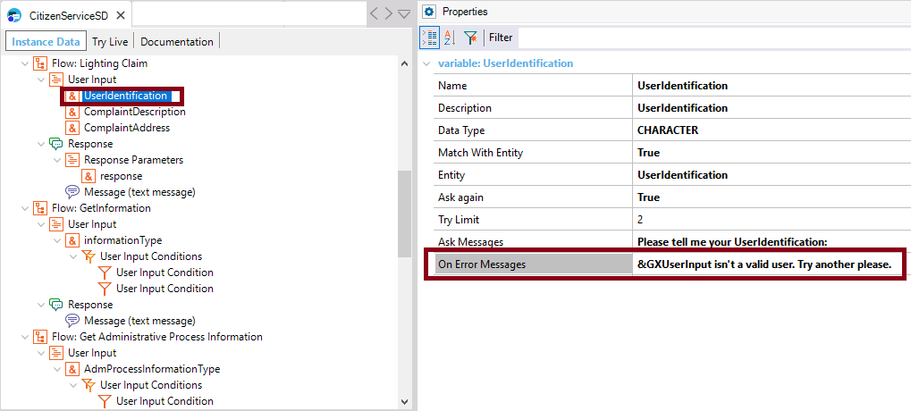

Specifies the On Error Messages for this parameter. You can type multiple messages using the ‘;’ delimiter and reference any context parameter using the '&' character. Samples
Here, the "Lighting Claim" Flow includes a User input called "UserIdentification", whose purpose is to ask the user to enter his name or identification. If the information entered by the user isn't valid, the message specified in the On Error Messages property is displayed. In this case, a contextual parameter called &GXUserinput is used to reproduce the user input.  AvailabilityThis property is available since GeneXus 15 upgrade 12. Scope Objects: Conversational Flows See Also
|
| Backlinks |
| match With Entity property |